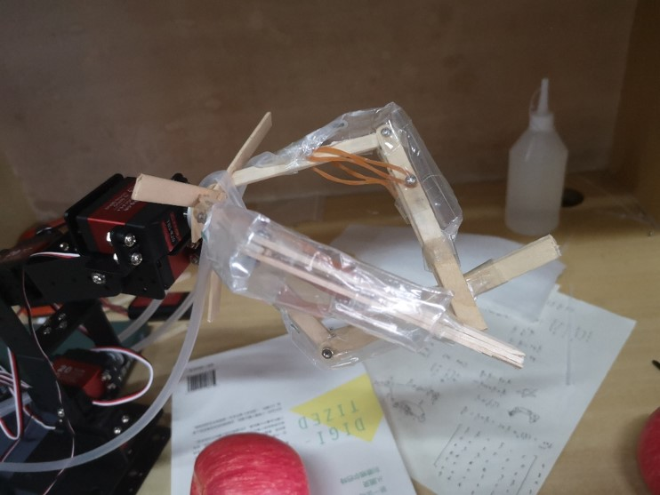
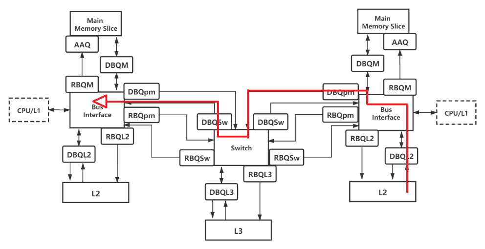

Apple-picking Robot with a Soft Gripper, June 2021
Course: Motion Control Technology, Advisor: Prof. Jun Meng
Designed the mechanical structure that takes advantage of gasbag to imitate human's muscle. And it can also achieve the soft grab through self-adaptation process.
Proposed a closed-loop system based on objective trace that enables the robotic arm to detect, approach and seize the apple according to the real-time information from a single camera.

Analytical Analysis of Multi-core Memory Hierarchy based on M/D/1/∞ Queuing Theory Model, June 2021
Course: Operation Research, Advisor: Prof. Yan He
Learned and explored the practical way for engineers to get the relatively deep insight of the memory hierarchy design.
The scheme based on queuing theory model that can predict the influence of the workload to the latency was provided by R.E.Matick et al. And I employed their method to observe the sensitivity of the parameters.

Method Confusion Attack on Bluetooth Pairing, Jan 2021
Course: Internet of Things Security, Advisor: Prof. Xiaoyu Ji
Explored and reproduced the method that leverages the flaw in BLE first-time pairing to construct MitM attack in the paper published in IEEE S&P 2021.
Modified the source code to accomplish sniff attack and tampering attack demo. Owe to the vivid demonstration, I won the Best Innovation Award in the final presentation competition.
When getting stuck on elusive problems of hardware and software, I got assistance from the paper's first author. Multiple discussions between us made the reproduction successful and further improved the system.
Infusion Pump Control System, July 2020
Course: Practical Design of Electronic System, Advisor: Prof. Caijun Qi
Analyzed and simulated the hardware circuit.
Accomplished the incremental PID algorithm, sensor module and communication module, including the sampling loop, interrupt processing and serial communication on the MCU (MSP430).